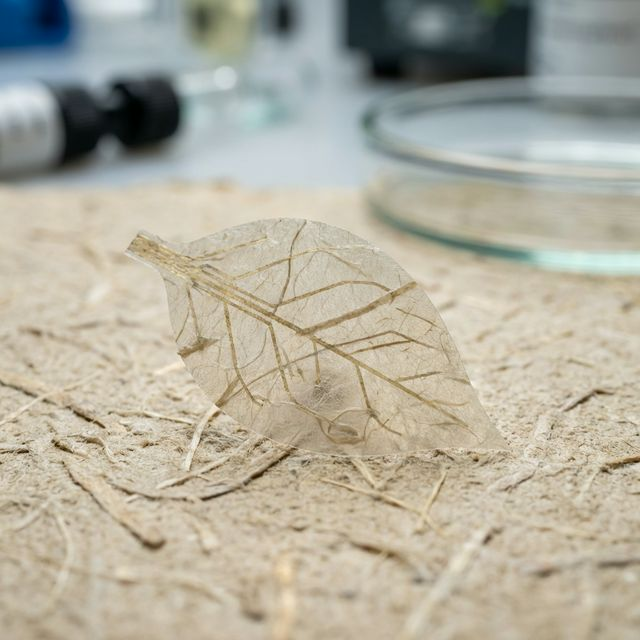

Research & Development
Smart Paper Sensors
Developing biodegradable sensors integrated directly into paper structures for sustainable packaging solutions.

Overview
This project focuses on the intersection of paper mechanics and electronic integration. By utilizing the inherent properties of cellulose fibers, we are developing sensors that can monitor moisture, temperature, and structural integrity without the need for traditional plastic-based electronics.
Key Objectives
- Integration of conductive materials into the papermaking process.
- Ensuring full biodegradability of the final product.
- Scalable manufacturing for sustainable packaging.
Impact
The successful implementation of these sensors could drastically reduce electronic waste in the logistics and packaging industries, providing a circular economy solution for "smart" goods tracking.